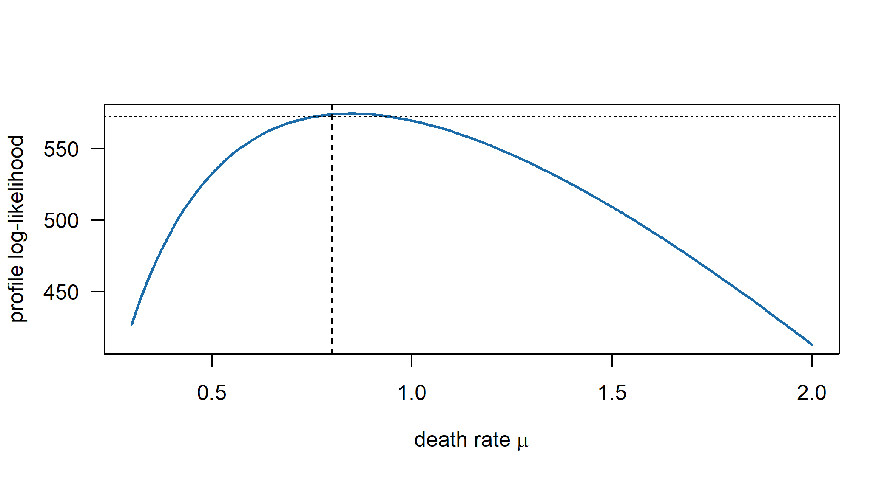
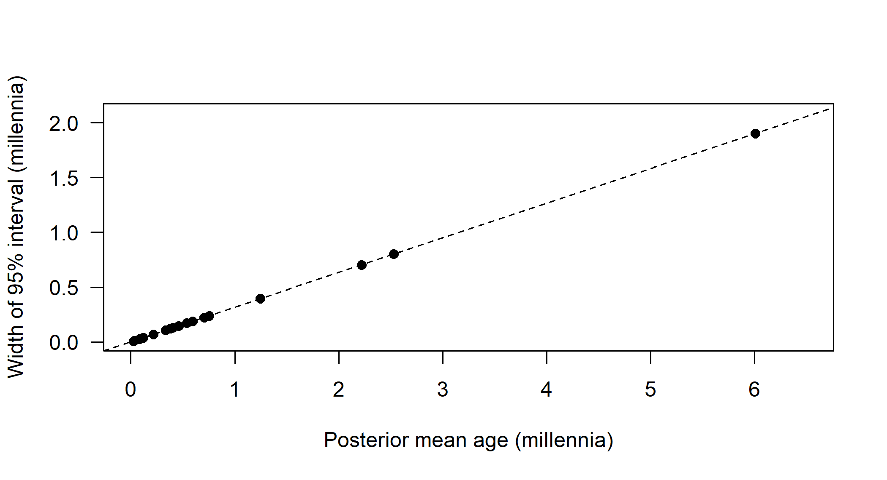

C Technical Notes: Models of Change and Time
This appendix collects the technical material behind Chapters 7 to 10: derivations of the likelihoods and transition probabilities of the models of lexical change, the algebra of ascertainment corrections, hand-coded implementations and their checks against packages, the mathematics of clock models and calibration densities, and the longer simulations. Each section corresponds to one chapter and can be read, and run, on its own; the chapters point here wherever material has been moved. Readers who need the underlying probability, matrix algebra or Markov-chain theory will find it in Appendix A.
C.1 Chapter 7: Models of Lexical Evolution
This section collects the derivations and hand-coded implementations behind Chapter 7: the binary chain, the ascertainment corrections, the covarion model, the stochastic Dollo likelihood and its relation to the reversible model, the Mk model, and the algebra of within-meaning dependence. All code runs on its own; the trees and data are recreated with the same random seeds as in the chapter.
C.1.1 Simulation functions
The chapter uses two simulators. sim_ctmc_binary() simulates \(n\) independent binary characters under the reversible CTMC of Equation (7.1), drawing the root state from the stationary distribution and then, branch by branch from the root, the state at each child from the row of \(\mathbf{P}(t)\) (Equation (7.2)) selected by the parent’s state; with shape given, each character’s branch lengths are multiplied by its own gamma-distributed rate. sim_dollo() simulates the stochastic Dollo process directly: it draws a Poisson number of traits at the root with the stationary mean \(\lambda/\mu\), thins inherited traits by their survival probability \(e^{-\mu t}\) along each branch, adds a Poisson number of new traits born at uniform times along the branch, and keeps those that survive to its end. Only traits present in at least one leaf are returned, which reproduces the way cognate data are ascertained.
sim_ctmc_binary <- function(tree, n, pi1, rate = 1, shape = NULL) {
# simulate n binary characters on 'tree' under the reversible binary CTMC;
# if 'shape' is given, character rates are drawn from a Gamma(shape, shape)
tree <- reorder(tree, "cladewise") # parents before children
ntip <- Ntip(tree)
site_rate <- if (is.null(shape)) rep(1, n) else rgamma(n, shape, shape)
states <- matrix(NA_integer_, ntip + tree$Nnode, n)
states[ntip + 1, ] <- rbinom(n, 1, pi1) # root drawn from stationarity
pi0 <- 1 - pi1
beta <- rate / (2 * pi0 * pi1)
for (i in seq_len(nrow(tree$edge))) {
p <- tree$edge[i, 1]; ch <- tree$edge[i, 2]
e <- exp(-beta * tree$edge.length[i] * site_rate)
p1 <- ifelse(states[p, ] == 1, pi1 + pi0 * e, pi1 * (1 - e))
states[ch, ] <- rbinom(n, 1, p1)
}
out <- states[1:ntip, , drop = FALSE]
rownames(out) <- tree$tip.label
out
}
sim_dollo <- function(tree, lambda, mu) {
# stochastic Dollo: new cognate classes are born at rate lambda per unit
# time on every lineage; each existing class dies at rate mu; no rebirths
tree <- reorder(tree, "cladewise")
ntip <- Ntip(tree)
present <- vector("list", ntip + tree$Nnode)
n_root <- rpois(1, lambda / mu) # stationary number at the root
present[[ntip + 1]] <- seq_len(n_root)
next_id <- n_root
for (i in seq_len(nrow(tree$edge))) {
p <- tree$edge[i, 1]; ch <- tree$edge[i, 2]; t <- tree$edge.length[i]
inherited <- present[[p]]
kept <- inherited[runif(length(inherited)) < exp(-mu * t)]
nb <- rpois(1, lambda * t) # births along this branch
if (nb > 0) {
born_at <- runif(nb, 0, t)
alive <- runif(nb) < exp(-mu * (t - born_at))
kept <- c(kept, next_id + which(alive))
next_id <- next_id + nb
}
present[[ch]] <- kept
}
ids <- sort(unique(unlist(present[1:ntip]))) # only observable classes
out <- t(vapply(present[1:ntip], function(z) as.integer(ids %in% z),
integer(length(ids))))
rownames(out) <- tree$tip.label
out
}C.1.2 The binary chain: transition probabilities and scaling
Write \(\mathbf{1}\pi\) for the \(2 \times 2\) matrix whose rows are both equal to \(\pi = (\pi_0, \pi_1)\). The rate matrix of Equation (7.1) is then \(\mathbf{Q} = \beta(\mathbf{1}\pi - \mathbf{I})\), which is the “resampling” description of the chain: at rate \(\beta\) the state is redrawn from \(\pi\). Because \(\pi\mathbf{1} = 1\), the matrix \(\mathbf{1}\pi\) is idempotent, \((\mathbf{1}\pi)^2 = \mathbf{1}\pi\), and therefore \(e^{\beta t \mathbf{1}\pi} = \mathbf{I} + (e^{\beta t} - 1)\mathbf{1}\pi\). Since \(\mathbf{I}\) commutes with everything,
\[\begin{equation*} \mathbf{P}(t) = e^{\mathbf{Q}t} = e^{-\beta t}\, e^{\beta t\, \mathbf{1}\pi} = e^{-\beta t}\,\mathbf{I} + \bigl(1 - e^{-\beta t}\bigr)\,\mathbf{1}\pi, \end{equation*}\]
which is Equation (7.2) written in matrix form (Section A.6 gives the general method). The expected number of changes per unit time at stationarity is \(\pi_0 q_{01} + \pi_1 q_{10} = \pi_0 \beta \pi_1 + \pi_1 \beta \pi_0 = 2\beta\pi_0\pi_1\), so measuring branch lengths in expected changes per character requires \(2\beta\pi_0\pi_1 = 1\), the scaling used by binary_P(). The same argument applies to any chain of the form \(\beta(\mathbf{1}\pi - \mathbf{I})\), including the \(K\)-state Mk model (Section C.1.8). The code below checks the closed form against a numerical matrix exponential computed by eigendecomposition; it is an implementation-validation check in the sense of Section 6.10.
pi1 <- 0.3
beta <- 1 / (2 * (1 - pi1) * pi1)
Q <- beta * matrix(c(-pi1, pi1, 1 - pi1, -(1 - pi1)), 2, 2, byrow = TRUE)
eg <- eigen(Q)
P_num <- eg$vectors %*% diag(exp(eg$values * 0.5)) %*% solve(eg$vectors)
all.equal(unname(binary_P(0.5, pi1)), P_num)#> [1] TRUEC.1.3 Ascertainment corrections
Suppose characters are generated independently, each with pattern probabilities \(P(x \mid \theta)\) over all \(2^n\) patterns of presence and absence among \(n\) languages, and that a character enters the dataset only if its pattern lies outside a set \(\mathcal{U}\) of unobservable patterns. For an observed character, the probability of its pattern given that it was recorded is
\[\begin{equation*} P(D_i = x \mid D_i \notin \mathcal{U}) = \frac{P(x \mid \theta)}{P(D_i \notin \mathcal{U} \mid \theta)} = \frac{P(x \mid \theta)}{1 - \sum_{u \in \mathcal{U}} P(u \mid \theta)}, \qquad x \notin \mathcal{U}, \end{equation*}\]
and independence across characters gives Equation (7.4). The conditional likelihood is the likelihood of the observed patterns given the number \(N\) of observed characters. The full likelihood would also include the probability of observing exactly \(N\) characters out of an unknown total \(N^*\), which depends on \(N^*\); since \(N^*\), the number of cognate classes that ever existed in the meaning slots, is unknowable, conditioning on \(N\) discards only information that could not be used anyway.
The denominators for the three filtering schemes of Chapter 7 are, writing \(\mathbf{0}\) and \(\mathbf{1}\) for the all-absent and all-present patterns and \(\mathbf{e}_j\) for the pattern in which only language \(j\) has the cognate,
\[\begin{align*} \text{no-absence:} \quad & 1 - P(\mathbf{0}), \\ \text{variable-only:} \quad & 1 - P(\mathbf{0}) - P(\mathbf{1}), \\ \text{informative-only:} \quad & 1 - P(\mathbf{0}) - P(\mathbf{1}) - \sum_{j=1}^{n} \bigl[P(\mathbf{e}_j) + P(\mathbf{1} - \mathbf{e}_j)\bigr], \end{align*}\]
where the last line assumes \(n \geq 4\) and binary characters, so that a pattern is parsimony-uninformative exactly when fewer than two languages have one of its states. Each probability is computed by the pruning algorithm, so the informative-only correction costs \(2n + 2\) extra pattern likelihoods per evaluation.
With missing data the unobservable pattern differs among characters. Let \(S_i\) be the set of languages for which the meaning of character \(i\) is recorded. Character \(i\) would have gone unrecorded if its class were absent from every language in \(S_i\), whatever the state in the other languages, so the no-absence denominator for character \(i\) is \(1 - P(\mathbf{0}_{S_i})\), the probability of the pattern with 0 in \(S_i\) and “?” elsewhere. Characters of the same meaning share \(S_i\) and therefore share a denominator, which is why the correction must be computed per meaning (or per distinct pattern of missingness) rather than once for the whole matrix. Ryder and Nicholls (2011) work out the corresponding conditioning for the stochastic Dollo model.
The next chunk implements the pruning likelihood with an optional no-absence correction. The trick is to append one artificial all-zero column to the data, compute its probability along with the real columns, and use it in the denominator. In the vocabulary of Section 6.10, the simulation is a parameter-recovery experiment for the corrected model, and a demonstration of what goes wrong when the correction is omitted, which is a misspecification of the observation process.
loglik_binary <- function(tree, X, pi1, rate, correct = TRUE) {
tree <- reorder(tree, "postorder")
ntip <- Ntip(tree); nn <- ntip + tree$Nnode
X <- cbind(X[tree$tip.label, , drop = FALSE], 0L) # last column: all absent
L0 <- L1 <- matrix(1, nn, ncol(X))
L0[1:ntip, ] <- X == 0
L1[1:ntip, ] <- X == 1
for (i in seq_len(nrow(tree$edge))) {
p <- tree$edge[i, 1]; ch <- tree$edge[i, 2]
P <- binary_P(tree$edge.length[i], pi1, rate)
L0[p, ] <- L0[p, ] * (P[1, 1] * L0[ch, ] + P[1, 2] * L1[ch, ])
L1[p, ] <- L1[p, ] * (P[2, 1] * L0[ch, ] + P[2, 2] * L1[ch, ])
}
site <- (1 - pi1) * L0[ntip + 1, ] + pi1 * L1[ntip + 1, ]
n <- ncol(X) - 1
ll <- sum(log(site[1:n]))
if (correct) ll <- ll - n * log(1 - site[n + 1])
ll
}
fit_binary <- function(tree, X, correct) {
nll <- function(p) -loglik_binary(tree, X, plogis(p[1]), exp(p[2]), correct)
o <- optim(c(0, 0), nll)
c(pi1 = plogis(o$par[1]), rate = exp(o$par[2]), logLik = -o$value)
}
set.seed(7)
tr <- rcoal(12, tip.label = paste0("L", 1:12))
tr$edge.length <- tr$edge.length / max(node.depth.edgelength(tr)) # root age 1
X_all <- sim_ctmc_binary(tr, 3000, pi1 = 0.25, rate = 1)
X_obs <- X_all[, colSums(X_all) > 0] # all-absent columns are never observed
c(simulated = ncol(X_all), observed = ncol(X_obs))#> simulated observed
#> 3000 2459est <- rbind(truth = c(pi1 = 0.25, rate = 1),
uncorrected = fit_binary(tr, X_obs, FALSE)[1:2],
corrected = fit_binary(tr, X_obs, TRUE)[1:2])
knitr::kable(est, digits = 3, caption = "Estimates of the stationary frequency of presence and of the rate of change from simulated cognate data from which all-absent characters were removed, with and without the ascertainment correction (true tree fixed).")| pi1 | rate | |
|---|---|---|
| truth | 0.250 | 1.000 |
| uncorrected | 0.308 | 1.362 |
| corrected | 0.256 | 1.041 |
The uncorrected fit overestimates the frequency of presence, because it must explain why no all-absent column turned up, and it overestimates the rate as well. The corrected fit recovers both parameters closely. In a dated analysis the rate error translates directly into an error in branch lengths, and therefore in dates. How large the error is depends on the tree and on \(\pi_1\), but it is not negligible for realistic cognate data, in which the proportion of cognate classes that have vanished without trace is high. The tree here is fixed at the truth, so the experiment shows that the correction is right when everything else is; it says nothing about how well \(\pi_1\) and the rate can be estimated when the tree and dates are also unknown.
C.1.4 How many gamma categories?
The discrete gamma replaces the integral over a character’s unknown rate by an average over \(K\) equiprobable categories, each represented by its mean rate (Section A.4.3). Whether \(K = 4\) is enough is a numerical question that can be answered directly. The chunk below simulates 800 binary characters on a random tree of twelve languages with rates drawn from the continuous gamma distribution with shape 0.4, the kind of strong heterogeneity found in basic vocabulary, and then fits the symmetric binary model by maximum likelihood on the true topology with \(K = 1\) (no rate variation) and \(K = 2\) to \(32\) categories, estimating branch lengths and the shape each time.
library(phangorn)
set.seed(17)
tr_k <- rtree(12, rooted = FALSE)
tr_k$edge.length <- tr_k$edge.length * 0.5
r_k <- rgamma(800, shape = 0.4, rate = 0.4) # continuous gamma rates
X_k <- do.call(cbind, lapply(r_k, function(r)
as.character(simSeq(tr_k, l = 1, type = "USER", levels = c("0", "1"),
rate = r))))
pd_k <- phyDat(X_k, type = "USER", levels = c("0", "1"))
ctl <- pml.control(trace = 0)
fit_k <- function(K) {
f <- if (K == 1) optim.pml(pml(tr_k, pd_k), optEdge = TRUE, control = ctl)
else optim.pml(pml(tr_k, pd_k, k = K, shape = 1), optEdge = TRUE,
optGamma = TRUE, control = ctl)
c(K = K, logLik = f$logLik, shape = if (K == 1) NA else f$shape,
tree_length = sum(f$tree$edge.length))
}
tab_k <- as.data.frame(t(sapply(c(1, 2, 4, 8, 16, 32), fit_k)))
knitr::kable(tab_k, digits = 3, caption = paste0(
"Maximum-likelihood fits with K discrete gamma categories to 800 ",
"characters simulated with continuous gamma rates (shape 0.4); true ",
"tree length ", round(sum(tr_k$edge.length), 2), "."))| K | logLik | shape | tree_length |
|---|---|---|---|
| 1 | -5001 | NA | 2.328 |
| 2 | -4694 | 0.417 | 3.757 |
| 4 | -4682 | 0.363 | 6.288 |
| 8 | -4682 | 0.368 | 6.724 |
| 16 | -4682 | 0.370 | 6.799 |
| 32 | -4682 | 0.371 | 6.820 |
Going from no rate variation to two categories gains hundreds of log-likelihood units, two to four categories gains about ten more, and beyond four or eight categories the log-likelihood no longer changes appreciably: the approximation has converged, and the estimated shape settles a little below its true value of 0.4. The tree length is the quantity to watch. The single-rate model underestimates it by more than half, the saturation effect of Section 7.5, and it keeps changing as categories are added, here by 8 percent between 4 and 32 categories, presumably because more categories represent the fast tail of the gamma, whose characters carry much of the information about long branches, differently. For dating, where tree length becomes time, it can therefore be worth checking that a result does not move when \(K\) is raised from four to eight, a cheap check that is rarely reported. As a numerical experiment on data simulated under the model this is implementation-level evidence about the approximation, not evidence that real cognate data are gamma-distributed (Section 6.10); the Bayesian counterpart, with free-weight and FreeRate alternatives, is script 17_rate_categories.Rev (Section H.3.18).
C.1.5 The covarion model
For binary characters, the covarion model of Tuffley and Steel (1998) has four states: \(0^{+}\) and \(1^{+}\) for absent and present while on, \(0^{-}\) and \(1^{-}\) for absent and present while off. With switching rates \(s_{\text{off}}\) (from on to off) and \(s_{\text{on}}\) (from off to on), the rate matrix is
\[\begin{equation} \mathbf{Q} = \begin{pmatrix} \cdot & \beta\pi_1 & s_{\text{off}} & 0 \\ \beta\pi_0 & \cdot & 0 & s_{\text{off}} \\ s_{\text{on}} & 0 & \cdot & 0 \\ 0 & s_{\text{on}} & 0 & \cdot \end{pmatrix}, \tag{C.1} \end{equation}\]
with rows and columns ordered \((0^{+}, 1^{+}, 0^{-}, 1^{-})\) and diagonal entries chosen so that each row sums to zero. Changes of the visible state occur only in the on states; switching changes only the hidden rate class. The stationary distribution is \(\bigl(\pi_0 p_{\text{on}}, \pi_1 p_{\text{on}}, \pi_0 p_{\text{off}}, \pi_1 p_{\text{off}}\bigr)\) with \(p_{\text{on}} = s_{\text{on}}/(s_{\text{on}}+s_{\text{off}})\), as one can check by verifying \(\pi\mathbf{Q} = \mathbf{0}\) column by column. The mean rate of visible change at stationarity is \(2\beta\pi_0\pi_1 p_{\text{on}}\), so the scaling that makes one unit of branch length equal one expected visible change is \(\beta = 1/(2\pi_0\pi_1 p_{\text{on}})\), as in covarion_Q() below. The data record only the visible state, so at each leaf the likelihood for an observed 1 is the sum over \(1^{+}\) and \(1^{-}\), and similarly for 0; pruning then proceeds exactly as before with a four-by-four \(\mathbf{P}(t)\). Tuffley and Steel (1998) discuss which of the covarion parameters are identifiable; in practice the switching rates are weakly determined by data from few taxa.
Figure 7.3 compares the expected proportion of differing characters between two languages separated for time \(t\). The two languages are joined by a path of length \(2t\), and for a stationary reversible chain the joint distribution of their states is \(\mathrm{diag}(\pi)\,\mathbf{P}(2t)\). For the single-rate binary chain this gives \(d(t) = 2\pi_0\pi_1\bigl(1 - e^{-2\beta t}\bigr)\). Under gamma-distributed rates with shape \(\alpha\) and mean one, \(d(t) = 2\pi_0\pi_1\bigl(1 - \mathrm{E}[e^{-2\beta\rho t}]\bigr)\), and the Laplace transform of the gamma distribution, \(\mathrm{E}[e^{-s\rho}] = (1 + s/\alpha)^{-\alpha}\), gives \(d(t) = 2\pi_0\pi_1\bigl[1 - (1 + 2\beta t/\alpha)^{-\alpha}\bigr]\). For the covarion model the joint distribution is computed numerically from the four-state matrix. The chapter’s code for the figure is:
covarion_Q <- function(pi1, s_off, s_on, rate = 1) {
pi0 <- 1 - pi1
p_on <- s_on / (s_on + s_off)
beta <- rate / (2 * pi0 * pi1 * p_on) # mean rate of visible change = rate
st <- c("0on", "1on", "0off", "1off")
Q <- matrix(0, 4, 4, dimnames = list(st, st))
Q["0on", "1on"] <- beta * pi1; Q["1on", "0on"] <- beta * pi0
Q["0on", "0off"] <- Q["1on", "1off"] <- s_off
Q["0off", "0on"] <- Q["1off", "1on"] <- s_on
diag(Q) <- -rowSums(Q)
Q
}
expQ <- function(Q, t) {
e <- eigen(Q)
Re(e$vectors %*% diag(exp(e$values * t)) %*% solve(e$vectors))
}
Qc <- covarion_Q(pi1 = 0.5, s_off = 0.5, s_on = 0.5)
pi_c <- rep(0.25, 4)
p_diff_cov <- function(t) {
J <- diag(pi_c) %*% expQ(Qc, 2 * t) # joint distribution at the two tips
vis <- c(0, 1, 0, 1) # visible state of each hidden state
sum(J[outer(vis, vis, "!=")])
}
ts <- seq(0, 3, length.out = 121)
b <- 1 / (2 * 0.25) # beta for pi1 = 0.5, rate 1
d_single <- 0.5 * (1 - exp(-b * 2 * ts))
d_gamma <- 0.5 * (1 - (1 + b * 2 * ts / 0.5)^(-0.5))
d_cov <- sapply(ts, p_diff_cov)
matplot(ts, cbind(d_single, d_gamma, d_cov), type = "l", lty = 1, lwd = 2,
col = c("#555555", "#1b6ca8", "#d1495b"), las = 1,
xlab = "time since separation", ylab = "expected proportion differing")
legend("bottomright", c("single rate", "gamma (shape 0.5)", "covarion"),
col = c("#555555", "#1b6ca8", "#d1495b"), lwd = 2, bty = "n")The following check runs that code without drawing and confirms that the stated stationary distribution satisfies \(\pi\mathbf{Q} = \mathbf{0}\) and that the mean rate of visible change is one (implementation validation).
cov <- new.env()
pdf(NULL) # run the figure code without drawing
eval(parse(text = chapter_code("07-lexical-models.Rmd",
"lexical-models-covfig")), envir = cov)
invisible(dev.off())
round(drop(cov$pi_c %*% cov$Qc), 12) # stationarity: all zero#> 0on 1on 0off 1off
#> 0 0 0 0#> [1] 1C.1.6 The stochastic Dollo likelihood
The likelihood of Nicholls and Gray (2008) is derived by thinking about where each trait was born. Number the nodes of the tree \(v\), let \(t_v\) be the length of the branch above node \(v\), and define for each node the weight
\[\begin{equation} w_v = 1 - e^{-\mu t_v} \quad (v \neq \text{root}), \qquad w_{\text{root}} = 1. \tag{C.2} \end{equation}\]
The expected number of traits born on the branch above \(v\) that are still alive at \(v\) is \(\int_0^{t_v} \lambda e^{-\mu(t_v - s)} ds = (\lambda/\mu) w_v\), and the expected number present at the root is \(\lambda/\mu = (\lambda/\mu) w_{\text{root}}\). Now let \(x\) be a pattern of presences and absences across the leaves, and let \(S_v(x)\) be the probability that a trait present at node \(v\) produces exactly the pattern \(x\) among the leaves descended from \(v\). These probabilities are computed by a pruning recursion that has only deaths in it:
\[\begin{equation} S_v(x) = \prod_{c \in \mathrm{ch}(v)} \Bigl[ e^{-\mu t_c} S_c(x) + \bigl(1 - e^{-\mu t_c}\bigr) \mathbb{1}\{x \text{ is all-absent below } c\} \Bigr], \tag{C.3} \end{equation}\]
with \(S_v(x) = x_v\) at a leaf. Either the trait survives along the branch to child \(c\) and must then produce the observed pattern below \(c\), or it dies on that branch, which is consistent with the data only if no language below \(c\) has it. Finally, let \(C_v(x) = 1\) if all the languages that have the trait in pattern \(x\) descend from \(v\), and 0 otherwise. Because births form a Poisson process, the number of traits showing pattern \(x\) is Poisson with mean
\[\begin{equation} \Lambda_x = \frac{\lambda}{\mu} \sum_{v} w_v\, C_v(x)\, S_v(x), \tag{C.4} \end{equation}\]
and the counts \(n_x\) of different patterns are independent. The likelihood of the data is therefore
\[\begin{equation} L(\tau, \mathbf{t}, \lambda, \mu) = \prod_{x} \frac{\Lambda_x^{n_x} e^{-\Lambda_x}}{n_x!} = e^{-\Lambda} \prod_x \frac{\Lambda_x^{n_x}}{n_x!}, \tag{C.5} \end{equation}\]
where the product runs over observable (not all-absent) patterns and \(\Lambda = \sum_x \Lambda_x\) is the expected total number of observable traits. \(\Lambda\) itself has a simple expression, \(\Lambda = (\lambda/\mu) \sum_v w_v (1 - G_v)\), where \(G_v\), the probability that a trait present at \(v\) dies out in every descendant, follows the recursion \(G_v = \prod_{c} \bigl[ e^{-\mu t_c} G_c + 1 - e^{-\mu t_c} \bigr]\) with \(G = 0\) at leaves.
Because \(\lambda\) enters only as a multiplier of every \(\Lambda_x\), its maximum-likelihood value given everything else is \(\hat\lambda = N / (\Lambda/\lambda)\), where \(N\) is the number of observed traits, and conditional on \(N\) the pattern counts are multinomial with probabilities \(\Lambda_x/\Lambda\), which do not depend on \(\lambda\). Multiplying all branch lengths by a constant \(c\) and dividing \(\mu\) by \(c\) leaves every \(w_v\), \(S_v\) and \(G_v\) unchanged, and \(\Lambda_x\) then changes only through the factor \(\lambda/\mu\), which \(\lambda\) can absorb; this is the formal statement that only \(\mu t\) is identifiable without calibrations.
The following code implements Equations (C.2) to (C.5). For each character (column) it computes \(S_v(x)\) by the recursion of Equation (C.3), counts how many presences fall below each node to evaluate \(C_v(x)\), and sums the contributions. It returns \(a_x = \Lambda_x / \lambda\) for every column and \(A = \Lambda / \lambda\), from which both the full and the conditional log-likelihood follow. The simulation that follows is a parameter-recovery experiment with the tree fixed at the truth.
dollo_rates <- function(tree, X, mu) {
# returns a = Lambda_x / lambda for each column of X, and A = Lambda / lambda
tree <- reorder(tree, "postorder")
ntip <- Ntip(tree); nn <- ntip + tree$Nnode; root <- ntip + 1
X <- X[tree$tip.label, , drop = FALSE]
S <- matrix(1, nn, ncol(X)); S[1:ntip, ] <- X # S_v(x)
cnt <- matrix(0, nn, ncol(X)); cnt[1:ntip, ] <- X # presences below v
G <- rep(1, nn); G[1:ntip] <- 0 # P(dies out below v)
w <- rep(1, nn) # w_root = 1
for (i in seq_len(nrow(tree$edge))) {
p <- tree$edge[i, 1]; ch <- tree$edge[i, 2]
s <- exp(-mu * tree$edge.length[i]) # survival on branch
S[p, ] <- S[p, ] * (s * S[ch, ] + (1 - s) * (cnt[ch, ] == 0))
cnt[p, ] <- cnt[p, ] + cnt[ch, ]
G[p] <- G[p] * (s * G[ch] + 1 - s)
w[ch] <- 1 - s
}
C <- sweep(cnt, 2, colSums(X), "==") # all presences below v
list(a = colSums(w * S * C) / mu, A = sum(w * (1 - G)) / mu)
}
dollo_loglik <- function(tree, X, lambda, mu) {
# full log-likelihood (Equation dollo-lik), dropping the constant n_x! terms
r <- dollo_rates(tree, X, mu)
sum(log(lambda * r$a)) - lambda * r$A
}
set.seed(7)
Xd <- sim_dollo(tr, lambda = 100, mu = 0.8) # same 12-language tree as above
dim(Xd)#> [1] 12 430mus <- seq(0.3, 2, by = 0.02)
prof <- sapply(mus, function(m) {
lam_hat <- ncol(Xd) / dollo_rates(tr, Xd, m)$A # profile out lambda
dollo_loglik(tr, Xd, lam_hat, m)
})
mu_hat <- mus[which.max(prof)]
c(mu_hat = mu_hat, lambda_hat = ncol(Xd) / dollo_rates(tr, Xd, mu_hat)$A)#> mu_hat lambda_hat
#> 0.84 104.22plot(mus, prof, type = "l", lwd = 2, col = "#1b6ca8", las = 1,
xlab = expression("death rate " * mu), ylab = "profile log-likelihood")
abline(v = 0.8, lty = 2)
abline(h = max(prof) - 1.92, lty = 3)
Figure C.1: Profile log-likelihood of the death rate mu under the stochastic Dollo model for data simulated on a known 12-language tree with mu = 0.8 and lambda = 100 (dashed line: true value; dotted line: approximate 95 percent likelihood interval, 1.92 log-units below the maximum).
The profile likelihood (Figure C.1) is sharply peaked near the true death rate, and the estimated birth rate is close to the true value of 100. With a fixed tree, a few hundred cognate classes carry plenty of information about \(\mu\). In real analyses the tree is unknown and the likelihood is embedded in an MCMC over trees, dates and rate parameters (Chapter 6), and \(\mu\) is then estimable only jointly with the time scale set by the calibrations.
C.1.7 The stochastic Dollo model as a limit of the reversible model
Write the reversible binary CTMC in terms of its gain rate \(\beta\pi_1\) and loss rate \(\beta\pi_0\), and let \(\pi_1 \to 0\) while keeping the loss rate fixed at \(\mu\), so that \(\beta \to \mu\). To first order in \(\pi_1\), an observable pattern \(x\) arises in one of two ways. Either the root is in state 1, with probability \(\pi_1\), and the trait then only dies (further gains are of order \(\pi_1\)), producing \(x\) with probability \(C_{\text{root}}(x) S_{\text{root}}(x)\); or the root is in state 0 and a single gain occurs on the branch above some node \(v\) at time \(s\) and survives to \(v\), with probability \(\int_0^{t_v} \mu\pi_1 e^{-\mu(t_v - s)}\, ds = \pi_1 (1 - e^{-\mu t_v}) = \pi_1 w_v\), after which the trait produces \(x\) with probability \(C_v(x) S_v(x)\). Summing,
\[\begin{equation*} P(x) \approx \pi_1 \sum_v w_v\, C_v(x)\, S_v(x) = \pi_1\, \frac{\mu}{\lambda}\, \Lambda_x, \qquad 1 - P(\mathbf{0}) \approx \pi_1 \sum_v w_v (1 - G_v) = \pi_1\, \frac{\mu}{\lambda}\, \Lambda, \end{equation*}\]
so the corrected pattern probabilities \(P(x)/(1 - P(\mathbf{0}))\) converge to \(\Lambda_x/\Lambda\), the conditional pattern probabilities of the stochastic Dollo model. The stochastic Dollo model is thus a boundary case of the ascertainment-corrected reversible model.
We can check this numerically, and at the same time carry out a small model comparison. Both models define a probability distribution over observable patterns, so their conditional log-likelihoods (the multinomial part, conditioning on the number of characters) can be compared directly. The reversible model has two free parameters here (\(\pi_1\) and the rate), the conditional Dollo model one (\(\mu\)). In the vocabulary of Section 6.10, the two matched fits are parameter-recovery checks and the two mismatched fits are tests of robustness under misspecification.
set.seed(8)
Xr <- sim_ctmc_binary(tr, 3000, pi1 = 0.25, rate = 1) # reversible data
Xr <- Xr[, colSums(Xr) > 0]cond_dollo <- function(tree, X) {
f <- function(m) { r <- dollo_rates(tree, X, m); sum(log(r$a / r$A)) }
o <- optimize(f, c(0.01, 10), maximum = TRUE)
c(logLik = o$objective, k = 1)
}
cond_ctmc <- function(tree, X) {
c(logLik = fit_binary(tree, X, TRUE)[["logLik"]], k = 2)
}
fits <- list(
"Dollo data, Dollo model" = cond_dollo(tr, Xd),
"Dollo data, reversible model" = cond_ctmc(tr, Xd),
"reversible data, Dollo model" = cond_dollo(tr, Xr),
"reversible data, reversible model" = cond_ctmc(tr, Xr))
cmp <- do.call(rbind, fits)
cmp <- cbind(cmp, AIC = -2 * cmp[, "logLik"] + 2 * cmp[, "k"])
knitr::kable(cmp, digits = 1, caption = "Conditional log-likelihoods and AIC for the stochastic Dollo and the ascertainment-corrected reversible binary model, each fitted to data simulated under each model on a known tree.")| logLik | k | AIC | |
|---|---|---|---|
| Dollo data, Dollo model | -1603 | 1 | 3208 |
| Dollo data, reversible model | -1602 | 2 | 3209 |
| reversible data, Dollo model | -15294 | 1 | 30591 |
| reversible data, reversible model | -12612 | 2 | 25228 |
#> pi1 rate logLik
#> 1.118e-02 1.898e-02 -1.602e+03On the Dollo data, the reversible model reaches essentially the same likelihood as the Dollo model by pushing \(\pi_1\) toward zero, exactly as the limit argument predicts, and the loss rate implied by its estimates, \(\beta\pi_0 \approx \text{rate}/(2\pi_1)\), is close to the Dollo estimate of \(\mu\). AIC then slightly prefers the Dollo model because it achieves the same fit with one fewer parameter. On the reversible data, the Dollo model is far worse: it cannot explain characters that need repeated gains except by many parallel losses of a trait born deep in the tree. Real data, of course, are generated by neither model, and the question for practice is which model’s failures matter less for the quantity of interest.
C.1.8 The Mk model for meaning slots
The Mk model of Lewis (2001) for a character with \(K\) states has equal rates between all pairs of states. Scaled to one expected change per unit time, every off-diagonal rate is \(1/(K-1)\), so that \(\mathbf{Q} = \frac{K}{K-1}(\mathbf{1}\pi - \mathbf{I})\) with \(\pi\) uniform. The argument of Section C.1.2 then gives \(\mathbf{P}(t) = e^{-Kt/(K-1)}\,\mathbf{I} + \bigl(1 - e^{-Kt/(K-1)}\bigr)\mathbf{1}\pi\), that is,
\[\begin{equation} P_{ij}(t) = \begin{cases} \dfrac{1}{K} + \dfrac{K-1}{K} \exp\!\left(-\dfrac{K t}{K-1}\right) & i = j, \\[2ex] \dfrac{1}{K} - \dfrac{1}{K} \exp\!\left(-\dfrac{K t}{K-1}\right) & i \neq j. \end{cases} \tag{C.6} \end{equation}\]
For meaning slots, two features of this formula matter. The probability of “no change” depends on \(K\), so that the same replacement rate implies different amounts of observable change for meanings with different numbers of classes; and the stationary probability \(1/K\) of every class, including classes found only in distant relatives, is what licenses the implausible direct switches discussed in Chapter 7. If meanings in which every language has the same class have been dropped from the data, the variable-only correction applies, with the \(K\) constant patterns in \(\mathcal{U}\).
C.1.9 Binary coding and within-meaning dependence
Consider a meaning with \(K\) cognate classes in the sample and binary columns \(x_1, \dots, x_K\). If each language has exactly one word for the meaning, the joint state of the \(K\) columns in a language is one of the \(K\) unit vectors \(\mathbf{e}_1, \dots, \mathbf{e}_K\), although \(K\) binary variables can take \(2^K\) values. If synonyms are allowed, the possible joint states are the \(2^K - 1\) non-empty subsets of classes. A meaning-slot model is a Markov chain on one of these constrained state spaces, which is exactly the structured-character construction of Tarasov (2019) applied to cognate classes.
An independent binary model ignores the constraint. At stationarity it assigns each language a joint state with probability \(\prod_k \pi_1^{x_k}(1 - \pi_1)^{1 - x_k}\), so that the probability of the configurations that actually occur in synonym-free data, exactly one 1, is
\[\begin{equation*} P(\text{exactly one class present}) = K \pi_1 (1 - \pi_1)^{K-1}, \end{equation*}\]
while the probability that the language has no word for the meaning at all is \((1 - \pi_1)^K\). The function below evaluates both for a few values of \(K\), with \(\pi_1 = 1/K\) (the value that makes the expected number of words per meaning equal to one).
p_exactly_one <- function(K, pi1) K * pi1 * (1 - pi1)^(K - 1)
K <- c(2, 4, 6, 8, 12)
round(data.frame(K = K, exactly_one = p_exactly_one(K, 1 / K),
none = (1 - 1 / K)^K), 3)#> K exactly_one none
#> 1 2 0.500 0.250
#> 2 4 0.422 0.316
#> 3 6 0.402 0.335
#> 4 8 0.393 0.344
#> 5 12 0.384 0.352With six classes, as for ‘hand’ in Table 7.1, the independent model gives only about 40 percent of its probability to configurations with exactly one word and about a third to languages with no word at all; as \(K\) grows the two proportions approach \(e^{-1} \approx 0.37\). The model is therefore spending most of its probability on data that cannot occur, and it explains the data that do occur as coincidences among independent columns. A replacement, which is a single event in a meaning-slot model, requires under the independent model a loss in one column and a gain in another, two events whose rates are estimated separately; the probability of both happening in the same short interval is of order \(dt^2\), so the independent model can produce a replacement only by passing through a transient state with zero or two words. This is the sense in which the binary likelihood of Equation (7.3) is a composite likelihood: it multiplies terms that are not independent, and so counts the evidence of each replacement roughly twice and the evidence of each fast meaning many times.
C.2 Chapter 8: Borrowing, Contact and Reticulation
This section lists the code behind the simulations of Chapter 8, derives the quartet statistics used there, checks them against phangorn, and explains why lateral transfer makes likelihood computation hard.
C.2.1 Simulating lexical evolution with borrowing
sim_borrowing() implements the meaning-slot model of Section 8.3 by stepping through time in increments of length dt. At each step, every lineage alive at that moment replaces the word for each meaning by a brand-new cognate class with probability innov * dt, which approximates a Poisson process of innovations with rate \(r_{\text{innov}}\) per meaning; the approximation error is of order dt. Borrowing events are drawn for each recipient lineage as a Poisson number with mean borrow * n_meanings * dt; each event copies the donor’s word for a randomly chosen meaning. For local borrowing, the donor is chosen with weight \(e^{-d/s}\), where \(d\) is the patristic distance between recipient and donor at time \(t\): two lineages alive at time \(t\) whose most recent common ancestor lived at time \(t_a\) are separated by \(d = 2(t - t_a)\), which is what the weight exp(-2 * (t - depth[anc]) / local_scale) computes. When a branch begins, it inherits the words of its parent branch, so that daughters start identical. meaning_dist() returns the proportion of meanings for which two languages have words from different cognate classes, and to_binary() converts the meaning-slot matrix into binary presence/absence characters.
library(phangorn)
family <- read.tree(text = paste0(
"((((A1:0.2,A2:0.2):0.2,(A3:0.25,A4:0.25):0.15):0.35,",
"((B1:0.2,B2:0.2):0.25,(B3:0.3,B4:0.3):0.15):0.3):0.25,",
"(((C1:0.15,C2:0.15):0.3,C3:0.45):0.25,(C4:0.4,C5:0.4):0.3):0.3);"))sim_borrowing <- function(tree, n_meanings = 200, innov = 0.5, borrow = 0,
mode = c("global", "local", "pair"), pair = NULL,
window = c(0, Inf), local_scale = 0.2, dt = 0.01) {
mode <- match.arg(mode)
ntip <- Ntip(tree)
depth <- node.depth.edgelength(tree) # time of each node from the root
E <- tree$edge
start <- depth[E[, 1]]; end <- depth[E[, 2]]
anc <- mrca(tree, full = TRUE) # MRCA of every pair of nodes
if (mode == "pair") { # lineages leading to two tips
lineage <- function(tip) {
k <- match(tip, tree$tip.label)
which(E[, 2] %in% c(k, Ancestors(tree, k, "all")))
}
rec_edges <- lineage(pair[1]); don_edges <- lineage(pair[2])
}
state <- matrix(NA_integer_, nrow(E), n_meanings) # words on each edge
opened <- rep(FALSE, nrow(E))
open_edges <- function(upto) { # daughters inherit parent's words
for (e in which(!opened & start <= upto + 1e-9)) {
pe <- which(E[, 2] == E[e, 1])
state[e, ] <<- if (length(pe)) state[pe, ] else seq_len(n_meanings)
opened[e] <<- TRUE
}
}
next_id <- n_meanings
for (t in seq(0, max(end) - dt / 2, by = dt)) {
open_edges(t)
active <- which(start <= t + 1e-9 & end > t + 1e-9)
na <- length(active)
# innovation: replace a word by a brand-new cognate class
hit <- matrix(runif(na * n_meanings) < innov * dt, na)
if (any(hit)) {
sub <- state[active, , drop = FALSE]
sub[hit] <- next_id + seq_len(sum(hit)); next_id <- next_id + sum(hit)
state[active, ] <- sub
}
# borrowing: replace a word by the donor's word for the same meaning
if (borrow > 0 && na > 1 && t >= window[1] && t < window[2]) {
recips <- if (mode == "pair") intersect(active, rec_edges) else active
for (rec in recips) {
donors <- if (mode == "pair") intersect(active, don_edges) else
setdiff(active, rec)
nb <- rpois(1, borrow * n_meanings * dt)
if (nb == 0 || length(donors) == 0) next
w <- if (mode == "local") {
exp(-2 * (t - depth[anc[E[rec, 2], E[donors, 2]]]) / local_scale)
} else rep(1, length(donors))
don <- donors[sample.int(length(donors), nb, replace = TRUE, prob = w)]
m <- sample.int(n_meanings, nb, replace = TRUE)
state[cbind(rec, m)] <- state[cbind(don, m)]
}
}
}
open_edges(Inf)
out <- state[match(seq_len(ntip), E[, 2]), ]
dimnames(out) <- list(tree$tip.label, paste0("m", seq_len(n_meanings)))
out
}
meaning_dist <- function(M) {
# proportion of meanings for which two languages have non-cognate words
n <- nrow(M)
d <- matrix(0, n, n, dimnames = list(rownames(M), rownames(M)))
for (i in 1:n) for (j in 1:n) d[i, j] <- mean(M[i, ] != M[j, ])
as.dist(d)
}
to_binary <- function(M) {
# binary presence/absence coding, one character per cognate class
do.call(cbind, lapply(seq_len(ncol(M)), function(j) {
cl <- unique(M[, j]); 1 * outer(M[, j], cl, "==")
}))
}The glottochronological estimate of the root age used in the experiment rests on the model without borrowing. Under that model, two languages whose lineages separated \(T\) units of time ago have cognate words for a meaning only if neither lineage has replaced the word since the split. Replacements occur at rate \(r\) on each of the two lineages, so the probability of no replacement on either is \(e^{-2rT}\), and the expected proportion of non-cognate meanings is \(d = 1 - e^{-2rT}\). Solving for \(T\) gives \(\hat{T} = -\log(1 - d)/(2r)\). The chapter’s code computes \(2\hat{T} = -\log(1 - d)/r\) for every pair and builds a UPGMA tree from these values; because UPGMA places each node at half the distance between the groups it joins, the root height of that tree is an estimate of \(T\) for the deepest split. Borrowing makes \(d\) smaller than \(1 - e^{-2rT}\), because shared words now arise by copying as well as by inheritance, and so \(\hat{T}\) is biased downward.
C.2.2 Quartet statistics
For four languages \(w, x, y, z\) on a tree in which the internal edge, of length \(e\), separates \(\{w, x\}\) from \(\{y, z\}\), the path from \(w\) to \(x\) and the path from \(y\) to \(z\) do not use the internal edge, whereas each of the other two pairings crosses it twice in total. With pendant edge lengths \(a_w, a_x, a_y, a_z\),
\[\begin{equation*} s_1 = a_w + a_x + a_y + a_z, \qquad s_2 = s_3 = a_w + a_x + a_y + a_z + 2e, \end{equation*}\]
in the notation of Equation (8.1). This is the four-point condition: the two largest sums are equal, and they exceed the smallest by twice the internal edge. Data that do not fit a tree exactly make the two largest sums differ, and the delta score (Equation (8.2)) measures the difference relative to the spread of the three sums, the Q-residual (Equation (8.3)) in absolute terms. The function quartet_stats() computes both for all \(\binom{n}{4}\) quartets after rescaling the distances to mean one, and averages the delta scores over the quartets that contain each language to obtain taxon-specific scores.
quartet_stats <- function(d) {
# delta score and Q-residual for every quartet of a distance matrix
D <- as.matrix(d) / mean(d) # rescale to mean distance 1
q <- combn(nrow(D), 4)
s <- cbind(D[cbind(q[1, ], q[2, ])] + D[cbind(q[3, ], q[4, ])],
D[cbind(q[1, ], q[3, ])] + D[cbind(q[2, ], q[4, ])],
D[cbind(q[1, ], q[4, ])] + D[cbind(q[2, ], q[3, ])])
s <- t(apply(s, 1, sort)) # s[, 1] <= s[, 2] <= s[, 3]
delta <- ifelse(s[, 3] > s[, 1], (s[, 3] - s[, 2]) / (s[, 3] - s[, 1]), 0)
qres <- (s[, 3] - s[, 2])^2
taxon_delta <- sapply(seq_len(nrow(D)),
function(i) mean(delta[colSums(q == i) > 0]))
names(taxon_delta) <- rownames(D)
list(delta = mean(delta), qres = mean(qres), taxon_delta = taxon_delta,
quartet_delta = delta)
}The check below recreates the contact dataset of Section 8.4 and compares the overall delta score from quartet_stats() with that from phangorn::delta.score() on the binary coding. Because phangorn computes Hamming distances on the binary characters, and these are proportional to the meaning distances when each language has one word per meaning (each non-cognate meaning contributes exactly two differing binary columns), and because the delta score does not depend on the scale of the distances, the two should agree. This is an implementation-validation check in the sense of Section 6.10.
set.seed(5)
M_contact <- sim_borrowing(family, innov = 0.5, borrow = 1, mode = "pair",
pair = c("B4", "C5"), window = c(0.6, 1))
d_contact <- meaning_dist(M_contact)
qs_contact <- quartet_stats(d_contact)
pd_contact <- phyDat(to_binary(M_contact), type = "USER", levels = c(0, 1))
c(ours = qs_contact$delta, phangorn = delta.score(pd_contact))#> ours phangorn
#> 0.1439 0.1439C.2.3 Listing conflicting splits
The helper used for Table 8.4 extracts the splits of a NeighborNet with as.splits(), labels each split canonically by the side that does not contain A1 (so that the same split from the network and from the true tree receives the same label), discards splits that occur in the true tree and trivial splits that separate a single language, and returns the heaviest remaining splits, each labeled by its smaller side.
conflicting_splits <- function(nnet, tree, top = 3) {
sp <- as.splits(nnet)
true_sp <- as.splits(tree)
lab <- attr(sp, "labels")
key <- function(s) { # canonical text label for a split
side <- lab[s]
if (!"A1" %in% side) side <- setdiff(lab, side)
paste(sort(side), collapse = ",")
}
k_true <- sapply(true_sp,
function(s) key(match(attr(true_sp, "labels")[s], lab)))
k_net <- sapply(sp, key)
w <- attr(sp, "weights")
small <- sapply(sp, function(s) {
side <- lab[s]
if (length(side) > length(lab) / 2) side <- setdiff(lab, side)
paste(sort(side), collapse = ",")
})
keep <- !(k_net %in% k_true) & lengths(sp) > 1 & lengths(sp) < length(lab) - 1
out <- data.frame(split = small[keep], weight = w[keep])
head(out[order(-out$weight), ], top)
}C.2.4 Why lateral transfer breaks the pruning recursion
Felsenstein’s pruning algorithm (Section 5.4), and the death-only recursion of the stochastic Dollo likelihood (Section C.1.6), rely on one property: once two lineages have split, what happens to a character on one of them is independent of what happens on the other. The likelihood can then be computed node by node from the leaves upward, combining independent contributions from the two children. Lateral transfer destroys this independence. Whether a trait reaches a lineage now depends on whether it is present in other lineages alive at the same time, so the state that must be tracked is not the presence or absence of the trait on one branch but its presence or absence on every branch alive at time \(t\). With \(L\) contemporaneous lineages this joint state takes \(2^L\) values (or \(2^L - 1\), excluding extinction of the trait everywhere, which for an observed trait cannot have happened). Between consecutive branching events the number of lineages is fixed, and the probabilities of the joint states evolve according to a system of linear differential equations: deaths remove a lineage from the set of carriers, and transfers add one at a rate proportional to the number of carriers. At each branching event the carrier set is updated by duplicating the parent lineage’s entry. Kelly and Nicholls (2017) showed how to organize this computation so that the likelihood can be evaluated exactly, given the tree, for moderate numbers of languages. The cost nevertheless grows quickly with the number of lineages alive at once, which is the main practical limitation of the model, and the reason why approximate methods, such as simulation-based inference (Chapter 16), are attractive for larger families.
C.3 Chapter 9: Clock Models and Rates of Language Change
This section collects the mathematics of the clock models of Chapter 9 and the code of its longer simulations. Each subsection can be run on its own after the setup chunk at the top of this appendix.
C.3.1 Rate variation among meanings and the glottochronological bias
Section 9.2.5 stated that rate variation among meanings biases glottochronological dates downward. Let the replacement rate \(k\) of a meaning be gamma distributed with shape \(\alpha\) and rate \(\alpha / \bar k\), so that its mean is \(\bar k\) and its variance \(\bar k^2 / \alpha\). A meaning with rate \(k\) yields a shared cognate after a split \(t\) millennia ago with probability \(e^{-2kt}\), since both lineages must retain the ancestral word. Averaging over meanings uses the moment-generating function of the gamma distribution, \(\mathrm{E}[e^{sk}] = (1 - s \bar k / \alpha)^{-\alpha}\) for \(s < \alpha / \bar k\), here with \(s = -2t\): \[\begin{equation} C(t) = \mathbb{E}\left[e^{-2 k t}\right] = \left(1 + \frac{2 \bar{k} t}{\alpha}\right)^{-\alpha}. \tag{C.7} \end{equation}\] This curve decays more slowly than the exponential \(e^{-2\bar{k}t}\) of Equation (9.3), and approaches it as \(\alpha \to \infty\). A glottochronologist who knows \(\bar k\) and applies Equation (9.4) computes \(\hat{t} = -\ln C / (2\bar{k})\). Substituting Equation (C.7) gives \[\begin{equation} \hat{t} = \frac{\alpha}{2 \bar{k}} \ln\left(1 + \frac{2 \bar{k} t}{\alpha}\right). \tag{C.8} \end{equation}\] Because \(\ln(1 + x) < x\) for \(x > 0\), \(\hat t < t\) for every \(t > 0\), and for large \(t\) the estimate grows only like \(\ln t\). Strictly, Equation (C.8) is the estimate obtained from the expected proportion of shared cognates; with a finite list the observed proportion scatters around \(C(t)\), and because the logarithm is concave the average estimate is slightly lower still. The check below compares Equation (C.7) with a Monte Carlo average over a million gamma-distributed rates, which is a small piece of implementation validation for the formula.
set.seed(1)
kbar <- -log(0.86) # mean rate per millennium
alpha <- 1
tt <- c(1, 3, 6, 10) # true depths (millennia)
k <- rgamma(1e6, shape = alpha, rate = alpha / kbar)
mc <- sapply(tt, function(t) mean(exp(-2 * k * t)))
exact <- (1 + 2 * kbar * tt / alpha)^(-alpha) # Equation (clocks-gamma)
t_hat <- alpha / (2 * kbar) * log(1 + 2 * kbar * tt / alpha)
round(cbind(t = tt, C_monte_carlo = mc, C_formula = exact,
t_hat = t_hat), 4)#> t C_monte_carlo C_formula t_hat
#> [1,] 1 0.7681 0.7683 0.874
#> [2,] 3 0.5247 0.5250 2.136
#> [3,] 6 0.3557 0.3559 3.425
#> [4,] 10 0.2488 0.2490 4.609The code for Figure 9.2 is:
set.seed(11)
kbar <- -log(0.86) # mean replacement rate per millennium
n_mean <- 200
sim_pair <- function(t, alpha) {
k <- rgamma(n_mean, shape = alpha, rate = alpha / kbar)
keepA <- runif(n_mean) < exp(-k * t)
keepB <- runif(n_mean) < exp(-k * t)
mean(keepA & keepB) # proportion of shared cognates
}
true_t <- rep(seq(0.5, 10, by = 0.5), each = 10)
C_sim <- sapply(true_t, sim_pair, alpha = 1)
t_hat <- -log(pmax(C_sim, 1 / n_mean)) / (2 * kbar)
plot(true_t, t_hat, pch = 16, col = adjustcolor("grey30", 0.4),
xlim = c(0, 10), ylim = c(0, 10), las = 1,
xlab = "True time since split (millennia)",
ylab = "Glottochronological estimate (millennia)")
abline(0, 1, lty = 3)
expected_hat <- function(t, alpha) {
alpha / (2 * kbar) * log(1 + 2 * kbar * t / alpha)
}
alphas <- c(0.5, 1, 2, 5)
for (j in seq_along(alphas)) curve(expected_hat(x, alphas[j]), add = TRUE,
lwd = 2, lty = j)
legend("topleft", bty = "n", lwd = 2, lty = seq_along(alphas),
legend = paste("alpha =", alphas))C.3.2 Relaxed-clock models
Uncorrelated lognormal clock. In the UCLN model of Drummond et al. (2006), the rate of branch \(j\) is \[\begin{equation} r_j = \bar{r} \, \epsilon_j, \qquad \ln \epsilon_j \sim \mathcal{N}\!\left(-\tfrac{\sigma^2}{2}, \, \sigma^2\right), \tag{C.9} \end{equation}\] independently for every branch. If \(X \sim \mathcal{N}(m, s^2)\) then \(\mathrm{E}[e^X] = e^{m + s^2/2}\) and \(\operatorname{Var}(e^X) = (e^{s^2} - 1) e^{2m + s^2}\) (Section A.4). With \(m = -\sigma^2/2\) the multipliers therefore have mean one, so that \(\bar r\) is the mean rate, and their coefficient of variation is \(\sqrt{e^{\sigma^2} - 1}\), whatever \(\bar r\). Some programs parameterize the lognormal by the mean and standard deviation of the rates themselves rather than of their logarithms; reported values of \(\sigma\) must be read with the program’s convention in mind. The uncorrelated exponential clock replaces the lognormal by an exponential distribution with mean \(\bar r\), whose coefficient of variation is one.
Autocorrelated (geometric Brownian motion) clock. In the model of Thorne et al. (1998) and Kishino et al. (2001), the logarithm of the rate performs a Brownian motion along the tree. For a branch of duration \(t\) from a parent node with rate \(r_{\text{pa}}\) to a child node with rate \(r_{\text{ch}}\), \[\begin{equation} \ln r_{\text{ch}} \sim \mathcal{N}\!\left(\ln r_{\text{pa}} - \frac{\nu t}{2}, \; \nu t\right), \tag{C.10} \end{equation}\] where \(\nu\) is the variance of the log rate per unit time. By the same lognormal identity, \(\mathrm{E}[r_{\text{ch}} \mid r_{\text{pa}}] = r_{\text{pa}}\): the \(-\nu t / 2\) term keeps the expected rate constant along a lineage. The rate applied to a branch is usually the average of the rates at its two ends (as in the simulation of Section 9.5.6) or, more exactly, the time average of the rate process along the branch. Rates of sister branches are correlated through their shared parent, and the correlation decays as the branches lengthen. The Cox-Ingersoll-Ross process replaces the Brownian motion by a mean-reverting process, which keeps rates from drifting arbitrarily far from the mean over long times.
Random local clocks. In the model of Drummond and Suchard (2010), each branch \(j\) carries an indicator \(I_j\) of a rate change at its start and a multiplier \(m_j\). The rate of branch \(j\) is the root rate multiplied by the multipliers of all branches with \(I = 1\) on the path from the root to \(j\), inclusive. The number of changes \(\sum_j I_j\) has a prior, often a Poisson distribution truncated to the number of branches, and the multipliers a prior centered on one. The strict clock (\(\sum_j I_j = 0\)) is nested within the model.
The following chunk checks the mean-one parameterization and the coefficient-of-variation formula of the UCLN model, and the mean-preserving property of Equation (C.10), by simulation.
set.seed(2)
sigma <- 0.6
eps <- rlnorm(1e6, meanlog = -sigma^2 / 2, sdlog = sigma)
round(c(mean_multiplier = mean(eps), cv_simulated = sd(eps) / mean(eps),
cv_formula = sqrt(exp(sigma^2) - 1)), 3)#> mean_multiplier cv_simulated cv_formula
#> 1.000 0.657 0.658nu <- 0.15; dur <- 2 # drift variance, branch duration
log_r <- rnorm(1e6, mean = 0 - nu * dur / 2, sd = sqrt(nu * dur))
round(c(mean_rate = mean(exp(log_r)), var_log_rate = var(log_r),
nu_t = nu * dur), 3)#> mean_rate var_log_rate nu_t
#> 0.999 0.300 0.300C.3.3 The clock simulation of Section 9.5.6
The simulation in Section 9.5.6 draws a coalescent time tree of sixteen languages with a root age of six millennia, assigns rates to its branches under a strict clock, an uncorrelated lognormal clock (Equation (C.9)) and an autocorrelated clock (Equation (C.10)), and draws a Poisson number of lexical changes on each branch. The code is:
set.seed(9)
ntip <- 16
time_tree <- rcoal(ntip, tip.label = paste0("L", 1:ntip))
time_tree$edge.length <- time_tree$edge.length * 6 /
max(node.depth.edgelength(time_tree)) # root age = 6 millennia
nb <- nrow(time_tree$edge)
# (1) strict clock
r_strict <- rep(1, nb)
# (2) uncorrelated lognormal, Equation (clocks-ucln), sigma = 0.6
sigma <- 0.6
r_ucln <- rlnorm(nb, meanlog = -sigma^2 / 2, sdlog = sigma)
# (3) autocorrelated geometric Brownian motion, Equation (clocks-gbm)
nu <- 0.15
logr_node <- numeric(ntip + time_tree$Nnode) # root log-rate = 0
r_auto <- numeric(nb)
for (i in order(node.depth.edgelength(time_tree)[time_tree$edge[, 2]])) {
pa <- time_tree$edge[i, 1]; ch <- time_tree$edge[i, 2]
dt <- time_tree$edge.length[i]
logr_node[ch] <- rnorm(1, logr_node[pa] - nu * dt / 2, sqrt(nu * dt))
r_auto[i] <- exp((logr_node[pa] + logr_node[ch]) / 2)
}
changes_per_kyr <- 80
make_phylogram <- function(rates) {
ph <- time_tree
ph$edge.length <- rpois(nb, changes_per_kyr * rates *
time_tree$edge.length) + 0.5
ph
}
phylograms <- list(strict = make_phylogram(r_strict),
uncorrelated = make_phylogram(r_ucln),
autocorrelated = make_phylogram(r_auto))
cv <- sapply(list(strict = r_strict, uncorrelated = r_ucln,
autocorrelated = r_auto),
function(r) round(sd(r) / mean(r), 2))
cv#> strict uncorrelated autocorrelated
#> 0.00 0.65 0.40The four-panel Figure 9.3 was drawn with:
op <- par(mfrow = c(1, 4), mar = c(2.5, 0.5, 2, 0.5), cex = 1)
plot(time_tree, main = "Time tree", cex = 0.8, label.offset = 0.06)
axisPhylo(cex.axis = 0.8)
for (nm in names(phylograms)) {
plot(phylograms[[nm]], main = nm, cex = 0.8,
label.offset = 0.01 * max(node.depth.edgelength(phylograms[[nm]])))
add.scale.bar(cex = 0.8)
}
par(op)C.3.4 Penalized likelihood
Penalized likelihood (Sanderson 2002) treats the number of changes \(x_j\) on branch \(j\) of an estimated phylogram as Poisson-distributed with mean \(r_j t_j\), and maximizes \[\begin{equation} \ell_{\text{PL}}(\mathbf{r}, \mathbf{t}) = \sum_j \left[ x_j \ln(r_j t_j) - r_j t_j \right] - \lambda \sum_{(j,k)} (r_j - r_k)^2, \tag{C.11} \end{equation}\] over the branch rates \(\mathbf{r}\) and the node ages \(\mathbf{t}\) that are not fixed by calibrations. The second sum runs over pairs of adjacent branches (a branch and its parent branch; the two branches descending from the root are usually treated as a pair or penalized against their mean). The first term is the Poisson log-likelihood up to a constant. The smoothing parameter \(\lambda\) sets how strongly rates of adjacent branches are pulled together. Sanderson’s cross-validation chooses \(\lambda\) as follows: for each terminal branch in turn, remove it, estimate rates and ages from the remaining branches, predict the removed branch’s length from the rate of its neighbor and its duration, and record the squared prediction error; the chosen \(\lambda\) minimizes the summed error.
In ape::chronos() (Paradis 2013), the same idea is implemented for several rate models ("correlated", "relaxed", "discrete" and "clock"), and each fit carries the information criterion \(\Phi\)IC of Paradis as attr(fit, "PHIIC")$PHIIC; smaller values are better. The chunk below uses the phylograms simulated in Section C.3.3 to show how \(\Phi\)IC and the error in the node ages vary with \(\lambda\) for the uncorrelated scenario under the correlated-rates model.
true_ages <- branching.times(time_tree)
ph <- phylograms$uncorrelated
cal <- makeChronosCalib(ph, node = "root", age.min = 6, age.max = 6)
lams <- c(0.01, 0.1, 1, 10, 100)
pl_tab <- t(sapply(lams, function(l) {
ch <- suppressWarnings(chronos(ph, lambda = l, model = "correlated",
calibration = cal, quiet = TRUE))
c(lambda = l, PhiIC = attr(ch, "PHIIC")$PHIIC,
rmse = sqrt(mean((branching.times(ch) - true_ages)^2)))
}))
knitr::kable(pl_tab, digits = c(2, 1, 3),
format.args = list(scientific = FALSE),
caption = "PhiIC and root-mean-square error of node ages for chronos fits with different smoothing parameters (uncorrelated scenario, correlated-rates model, root fixed at its true age).")| lambda | PhiIC | rmse |
|---|---|---|
| 0.01 | 318.8 | 0.457 |
| 0.10 | 403.6 | 0.514 |
| 1.00 | 425.6 | 0.520 |
| 10.00 | 428.2 | 0.521 |
| 100.00 | 2620.5 | 0.251 |
The criterion and the true error need not agree, because \(\Phi\)IC measures fit to the branch lengths, while the error in node ages also depends on how rate and time trade off on each branch. In this example they disagree sharply: \(\Phi\)IC is smallest for \(\lambda = 0.01\), whereas the node ages are most accurate for \(\lambda = 100\), the strongest smoothing tried. In the vocabulary of Section 6.10, choosing \(\lambda\) by \(\Phi\)IC is a model-selection step, not a validation of the dates.
C.3.5 The test for punctuational change
The simulation behind Figure 9.5 is listed below. It draws a Yule tree of 60 languages with phytools::pbtree(), adds Poisson numbers of gradual changes proportional to branch duration, optionally adds a Poisson burst of changes to every branch, and returns the root-to-tip path lengths.
set.seed(21)
yule_tree <- phytools::pbtree(n = 60, scale = 5) # root age 5 millennia
ne <- nrow(yule_tree$edge)
nodes_on_path <- sapply(1:60, function(i)
length(nodepath(yule_tree, from = 61, to = i)) - 1)
path_lengths <- function(burst) {
# gradual change (40 per millennium) plus a Poisson burst on every branch
ph <- yule_tree
ph$edge.length <- rpois(ne, 40 * yule_tree$edge.length) + rpois(ne, burst)
node.depth.edgelength(ph)[1:60]
}
op <- par(mfrow = c(1, 2), mar = c(4, 4, 3, 1))
for (b in c(0, 8)) {
pl <- path_lengths(b)
fit <- lm(pl ~ nodes_on_path)
plot(nodes_on_path, pl, pch = 16, col = "grey40", las = 1,
xlab = "Nodes on root-to-tip path", ylab = "Path length")
title(if (b == 0) "Gradual only" else "Gradual + bursts (8 per split)",
line = 1.6, cex.main = 0.95)
abline(fit, lwd = 2)
mtext(sprintf("slope = %.1f changes per node", coef(fit)[2]),
cex = 0.8, line = 0.3)
}Ordinary least squares treats the 60 path lengths as independent, but tips that share ancestral branches share the changes on them. Under purely gradual change the covariance of two path lengths is proportional to the time their paths share, which is the Brownian-motion covariance on the time tree, so phylogenetic generalized least squares with ape::corBrownian() (Section A.11) is the appropriate regression. The chunk below compares how often each method declares a significant slope (\(p < 0.05\)) when there are no bursts. In the vocabulary of Section 6.10 this checks the behavior of the test when its null hypothesis holds, under the test’s own assumptions.
library(nlme)
dat <- data.frame(sp = yule_tree$tip.label, nodes = nodes_on_path)
p_values <- function(burst) {
dat$pl <- path_lengths(burst)
ols <- summary(lm(pl ~ nodes, data = dat))$coefficients["nodes", 4]
bm <- corBrownian(1, yule_tree, form = ~ sp)
gls_fit <- gls(pl ~ nodes, data = dat, correlation = bm)
c(OLS = ols, PGLS = summary(gls_fit)$tTable["nodes", "p-value"])
}
set.seed(31)
null_p <- replicate(100, p_values(burst = 0))
burst_p <- replicate(100, p_values(burst = 8))
rbind(false_positive_rate = rowMeans(null_p < 0.05),
power_with_bursts = rowMeans(burst_p < 0.05))#> OLS PGLS
#> false_positive_rate 0.37 0.03
#> power_with_bursts 1.00 1.00Ordinary least squares rejects the null far more often than the nominal 5 percent when there are no bursts, because it overstates the amount of independent information; phylogenetic GLS keeps the error rate close to nominal while retaining power to detect bursts of the size simulated here. Neither version addresses the node-density artefact, which arises when branch lengths are estimated rather than known (Exercise 4 of Chapter 9).
C.4 Chapter 10: Calibration and Divergence Times
This section gives the mathematics behind calibration densities and effective priors, the infinite-sites limit, root-to-tip regression and the identifiability of ancestry, together with the code of the longer simulations of Chapter 10.
C.4.1 The infinite-sites limit
Consider a strict clock and imagine infinitely many characters, so that the branch lengths, and hence the height \(h_i\) of every node above the tips in expected changes per character, are known exactly. Then the age of node \(i\) is \(t_i = h_i / r\) and the root age is \(T = h_{\text{root}} / r\), so \[t_i = \frac{h_i}{h_{\text{root}}} \, T = c_i \, T,\] with known constants \(c_i\). All the remaining uncertainty is uncertainty about \(T\), which only the calibrations inform. If the calibration gives \(T\) a posterior mean \(m\) and a 95 percent interval of width \(w\), then \(t_i\) has mean \(c_i m\) and interval width \(c_i w\), so that every node falls on the line \[\text{width}_i = \frac{w}{m} \times \text{mean}_i\] through the origin. This is the infinite-sites plot of Yang and Rannala (2006) and Rannala and Yang (2007): with finite data the points lie above the line, and the closer they come to it, the less more data would help. With several calibrations the argument is the same, except that the posterior of the time scale is the product of the information from all of them; with a relaxed clock, the \(c_i\) are themselves uncertain, so the limit is never reached. The chunk below draws the limiting line for a random tree with a root calibration uniform between 5 and 7 millennia.
set.seed(12)
tr <- rcoal(20)
c_i <- branching.times(tr) / max(branching.times(tr)) # known with inf. data
T_draws <- runif(1e4, 5, 7) # root calibration
ages <- outer(T_draws, c_i) # t_i = c_i * T
mean_age <- colMeans(ages)
width <- apply(ages, 2, function(a) diff(quantile(a, c(0.025, 0.975))))
plot(mean_age, width, pch = 16, las = 1, xlim = c(0, 6.5),
ylim = c(0, max(width) * 1.1),
xlab = "Posterior mean age (millennia)",
ylab = "Width of 95% interval (millennia)")
abline(0, coef(lm(width ~ mean_age - 1)), lty = 2)
Figure C.2: The infinite-sites limit under a strict clock. With unlimited data, every node age is a fixed fraction of the root age, so the width of its 95 percent interval is proportional to its mean, with slope set by the relative width of the root calibration (here uniform between 5 and 7 millennia).
#> mean_age
#> 0.3166C.4.2 Calibration densities
Offset lognormal and exponential. If the minimum age \(a\) is treated as a hard bound and the excess \(X = t - a\) has a lognormal distribution with parameters \(\mu\) and \(\sigma\) (the mean and standard deviation of \(\ln X\)), the node age has density \[\begin{equation} \begin{gathered} X \sim \text{LogNormal}(\mu, \sigma^2), \\ p(t) = \frac{1}{(t - a)\,\sigma\sqrt{2\pi}} \exp\!\left(-\frac{(\ln(t - a) - \mu)^2}{2\sigma^2}\right), \quad t > a. \end{gathered} \tag{C.12} \end{equation}\] The median age is \(a + e^{\mu}\) and the \(q\) quantile is \(a + e^{\mu + \sigma z_q}\), where \(z_q\) is the standard normal quantile. To place the median at \(t_{0.5}\) and the 97.5 percent quantile at an oldest plausible age \(u\), choose \(\mu = \ln(t_{0.5} - a)\) and \(\sigma = [\ln(u - a) - \mu] / 1.96\). For an offset exponential with rate \(\lambda\), the \(q\) quantile is \(a - \ln(1 - q)/\lambda\), so placing the 97.5 percent quantile at \(u\) requires \(\lambda = -\ln(0.025)/(u - a) \approx 3.69/(u - a)\). Programs differ in whether they parameterize the lognormal by \(\mu\) or by the mean of \(X\) in real space, a frequent source of miscalibration when a published specification is transferred between programs.
Soft bounds. A soft-bounded uniform calibration places probability \(1 - 2p\) uniformly on \([a, b]\), with density height \(h = (1 - 2p)/(b - a)\), and probability \(p\) in each tail. With exponentially decaying tails, the lower tail has density \(h e^{-\lambda (a - t)}\) for \(t < a\), whose total mass is \(h / \lambda\); setting this equal to \(p\) gives \(\lambda = h / p\), and likewise for the upper tail. The density is then continuous at the bounds. This is the construction used in Figure 10.1; programs differ in the exact shapes of the tails, so the construction should be checked against the documentation of the program used.
The functions below compute the parameters from a minimum age and an upper quantile, and check that the specified quantiles are reproduced.
offset_lnorm_par <- function(a, upper, median = a + 0.25 * (upper - a),
q = 0.975) {
# offset lognormal with given median and q-quantile (ages > a)
mu <- log(median - a)
c(meanlog = mu, sdlog = (log(upper - a) - mu) / qnorm(q))
}
offset_exp_rate <- function(a, upper, q = 0.975) -log(1 - q) / (upper - a)
p_ln <- offset_lnorm_par(a = 2.5, upper = 4)
lam <- offset_exp_rate(a = 2.5, upper = 4)
round(c(p_ln, exp_rate = lam,
check_ln = plnorm(4 - 2.5, p_ln[1], p_ln[2]),
check_exp = pexp(4 - 2.5, lam)), 3)#> meanlog sdlog exp_rate check_ln check_exp
#> -0.981 0.707 2.459 0.975 0.975The code for Figure 10.1, which also defines the function soft_unif(), is:
age <- seq(0, 7, by = 0.005)
a <- 2.5; b <- 4
d_unif <- dunif(age, a, b)
# soft uniform: 95% mass in [a, b], 2.5% exponential tails on each side
soft_unif <- function(x, a, b, p = 0.025) {
h <- (1 - 2 * p) / (b - a) # height of the flat part
lam_lo <- h / p; lam_hi <- h / p # tail rates giving mass p each side
ifelse(x < a, h * exp(-lam_lo * (a - x)),
ifelse(x > b, h * exp(-lam_hi * (x - b)), h))
}
d_soft <- soft_unif(age, a, b)
d_exp <- ifelse(age > a, dexp(age - a, rate = 1 / 0.6), 0)
d_lnorm <- ifelse(age > a, dlnorm(age - a, meanlog = log(0.6), sdlog = 0.8), 0)
plot(age, d_unif, type = "l", lwd = 2, ylim = c(0, 1.7), las = 1,
xlab = "Node age (millennia before present)", ylab = "Prior density")
lines(age, d_soft, lwd = 2, col = "grey60")
lines(age, d_exp, lwd = 2, lty = 2)
lines(age, d_lnorm, lwd = 2, lty = 4, col = "grey35")
abline(v = a, lty = 3)
legend("topright", bty = "n", lwd = 2, lty = c(1, 1, 2, 4),
col = c("black", "grey60", "black", "grey35"),
legend = c("Uniform (hard)", "Uniform (soft bounds)",
"Offset exponential", "Offset lognormal"))# the soft-bounded density integrates to one, with 2.5% in each tail
c(total = integrate(soft_unif, -Inf, Inf, a = 2.5, b = 4)$value,
lower_tail = integrate(soft_unif, -Inf, 2.5, a = 2.5, b = 4)$value)#> total lower_tail
#> 1.000 0.025C.4.3 Effective priors
In the multiplicative construction used by BEAST, the joint prior on node ages \(\mathbf{t}\) is proportional to the tree prior times the calibration densities, \[p(\mathbf{t}) \propto f_{\text{tree}}(\mathbf{t}) \prod_{c \in \mathcal{C}} f_c(t_c),\] restricted to node ages that respect the order of the tree. The marginal density of a calibrated node under this joint prior is generally not \(f_c\). In the conditional construction of MCMCTree (Yang and Rannala 2006), the calibrated node ages receive the joint density built from the calibration densities, truncated to respect their order, and the tree prior supplies only the conditional density of the uncalibrated ages given the calibrated ones. Truncation by ordering therefore affects both constructions; interaction with the tree prior affects only the multiplicative one. Heled and Drummond (2012) showed how to modify the Yule prior so that the marginal of a calibrated node equals its calibration density.
For the two-node example of Section 10.3.2 there is no tree prior, and the effective densities can be written down exactly. With root density \(f_R\) (normal with mean 6 and standard deviation 0.5) and descendant density \(f_D\) (uniform on \([4, 7]\)), with distribution functions \(F_R\) and \(F_D\), the effective joint density is \(f_R(x) f_D(y) \mathbb{1}\{y < x\} / Z\), with \(Z = \Pr(D < R)\). Integrating out one age at a time gives the effective marginals \[g_R(x) = \frac{f_R(x)\, F_D(x)}{Z}, \qquad g_D(y) = \frac{f_D(y)\, [1 - F_R(y)]}{Z}.\] The chunk below computes them by numerical integration and compares their means with the rejection sampler used in the chapter. This is implementation validation in the sense of Section 6.10: two independent computations of the same prior must agree.
f_R <- function(x) dnorm(x, 6, 0.5); F_R <- function(x) pnorm(x, 6, 0.5)
f_D <- function(y) dunif(y, 4, 7); F_D <- function(y) punif(y, 4, 7)
Z <- integrate(function(x) f_R(x) * F_D(x), -Inf, Inf)$value
g_R <- function(x) f_R(x) * F_D(x) / Z
g_D <- function(y) f_D(y) * (1 - F_R(y)) / Z
exact <- c(root = integrate(function(x) x * g_R(x), 3, 9)$value,
desc = integrate(function(y) y * g_D(y), 4, 7)$value)
set.seed(3) # same draws as in the chapter
m <- 2e5
root <- rnorm(m, 6, 0.5); desc <- runif(m, 4, 7); ok <- desc < root
sampler <- c(root = mean(root[ok]), desc = mean(desc[ok]))
round(rbind(exact = exact, rejection_sampler = sampler,
specified = c(6, 5.5)), 3)#> root desc
#> exact 6.122 5.058
#> rejection_sampler 6.122 5.057
#> specified 6.000 5.500C.4.4 Root-to-tip regression
Under a strict clock with rate \(r\), a tip sampled at age \(a_i\) (zero for a living language) lies at the end of a path of duration \(T - a_i\) from the root, so its expected root-to-tip distance is \(r(T - a_i)\), which is Equation (10.2). The regression \(d_i = \beta_0 + \beta_1 a_i + e_i\) therefore has \(\beta_1 = -r\) and \(\beta_0 = rT\), and the root age is estimated as \(\hat T = -\hat\beta_0 / \hat\beta_1\), the age at which the fitted line reaches zero distance. Two cautions apply. The residuals of different tips are correlated, because tips share ancestral branches, so the standard errors and p-values of ordinary regression are invalid, which is why the date-randomization test is used instead. And the root must be placed correctly: TempEst chooses the root that maximizes the fit of the regression, a choice that can be misled by rate variation.
The heterochronous family of Section 10.5.2 was simulated with the following code, which shortens the terminal branches of the eight longest-branched languages so that they end at their attestation ages:
set.seed(4)
n <- 24
het_tree <- phytools::pbtree(n = n, scale = 6, tip.label = paste0("L", 1:n))
term_len <- het_tree$edge.length[match(1:n, het_tree$edge[, 2])]
ancient <- order(term_len, decreasing = TRUE)[1:8] # eight ancient languages
tip_age <- setNames(rep(0, n), het_tree$tip.label)
for (i in ancient) {
e <- which(het_tree$edge[, 2] == i)
tip_age[i] <- runif(1, 0.3, 0.9) * het_tree$edge.length[e]
het_tree$edge.length[e] <- het_tree$edge.length[e] - tip_age[i]
}
nb <- nrow(het_tree$edge)
rates <- rlnorm(nb, -0.2^2 / 2, 0.2)
het_phylo <- het_tree
het_phylo$edge.length <- rpois(nb, 80 * rates * het_tree$edge.length) + 0.5C.4.5 The calibration experiment
The phylogram cal_phylo used in Sections 10.7 and 10.8 was simulated with the following code. The three internal calibrations are placed on the three oldest nodes below the root (cal_nodes), with true ages tc.
set.seed(5)
n <- 20
cal_tree <- phytools::pbtree(n = n, scale = 6, tip.label = paste0("L", 1:n))
nb <- nrow(cal_tree$edge)
rates <- rlnorm(nb, -0.4^2 / 2, 0.4)
cal_phylo <- cal_tree
cal_phylo$edge.length <- rpois(nb, 80 * rates * cal_tree$edge.length) + 0.5
true_ages <- branching.times(cal_tree)
ord <- names(sort(true_ages, decreasing = TRUE))
cal_nodes <- as.integer(ord[2:4]) # three internal nodes
tc <- true_ages[ord[2:4]] # their true agesC.4.6 Distinguishing an ancestor from a sister
Section 10.6.3 argued that ancestry is poorly identified for fragmentarily attested languages. Suppose an ancient language is attested for \(n\) meanings and lies on a side branch of length \(x\) millennia, from the point where it leaves the lineage of its relatives to its attestation. If each meaning is replaced independently at rate \(k\) per millennium, the probability that none of the \(n\) attested meanings has been replaced on the side branch is exactly \((e^{-kx})^n = e^{-nkx}\). A sampled ancestor (\(x = 0\)) and a sister on a side branch of length \(x\) therefore differ in the likelihood of “no unique changes” by the factor \(e^{-nkx}\), and side branches with \(e^{-nkx} > 0.05\), that is \[x < \frac{-\ln 0.05}{n k} \approx \frac{3}{n k},\] cannot be excluded at the 5 percent level. Conversely, if \(m\) meanings show apparent unique replacements, the maximum-likelihood length of the side branch is approximately \(m / (nk)\) when \(m\) is small relative to \(n\), whatever the source of those replacements: a literary register or a scribal convention is read as time on a side branch. In binary cognate coding, each such replacement appears as a unique loss and a unique gain. The calculation is optimistic, because it treats the state of the lineage at the time of attestation as known, whereas in practice it is reconstructed from the descendants with uncertainty.
max_side_branch <- function(n, retention = 0.86, conf = 0.95) {
# longest side branch (millennia) not excluded when no unique
# replacements are seen among n attested meanings
k <- -log(retention) # replacements per meaning per kyr
-log(1 - conf) / (n * k)
}
n_attested <- c(200, 100, 50, 20)
knitr::kable(data.frame(
meanings = n_attested,
years_0.80 = round(1000 * max_side_branch(n_attested, 0.80)),
years_0.86 = round(1000 * max_side_branch(n_attested, 0.86)),
years_0.90 = round(1000 * max_side_branch(n_attested, 0.90))),
caption = "Longest side branch (years) that cannot be excluded at the 5 percent level when an ancient language attested for a given number of meanings shows no unique replacements, for three retention rates per millennium.")| meanings | years_0.80 | years_0.86 | years_0.90 |
|---|---|---|---|
| 200 | 67 | 99 | 142 |
| 100 | 134 | 199 | 284 |
| 50 | 269 | 397 | 569 |
| 20 | 671 | 993 | 1422 |
# apparent unique changes are read as time: two register-specific words
# among 100 attested meanings imply a side branch of about
round(1000 * 2 / (100 * -log(0.86)))#> [1] 133